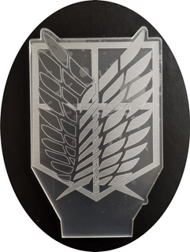

<ion-header>
  <ion-toolbar color="dark">
    <ion-buttons *ngIf="isNotHome" slot="start">
      <ion-back-button [defaultHref]="['/']" color="light">Back</ion-back-button>
    </ion-buttons>

    <ion-title class="ion-text-capitalize">{{pageTitle}}</ion-title>
    
  </ion-toolbar>
</ion-header>
